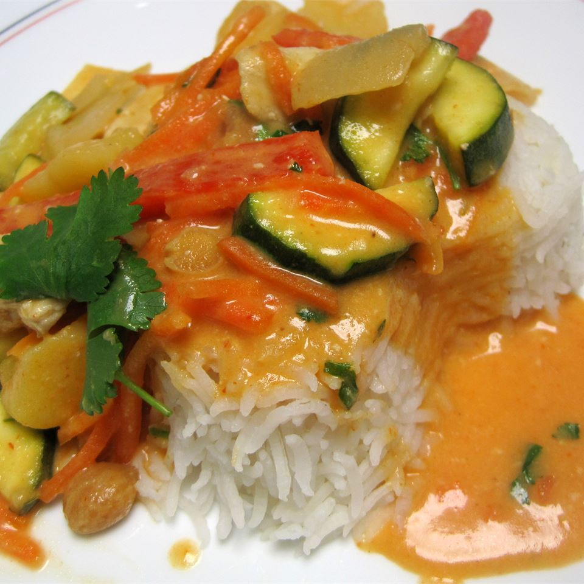

Thai Red Chicken Currys

Description
This is a quick and easy curry stir-fry made with chicken, zucchini, red bell pepper and carrot. Coconut milk
and curry paste make an irresistible sauce. No need to go out to eat, as this dish is ready in about 20 minutes!
Ingredients
- 2 teaspoons olive oil
- 1 pound skinless, boneless chicken breast halves - cut into thin strips
- 1 tablespoon Thai red curry paste
- 1 cup sliced halved zucchini
- 1 red bell pepper, seeded and sliced into strips
- ½ cup sliced carrots
- 1 onion, quartered then halved
- 1 tablespoon cornstarch
- 1 (14 ounce) can light coconut milk
- 2 tablespoons chopped fresh cilantro
Steps
- Heat the oil in a large skillet over medium-high heat. Add the chicken pieces; cook and stir for about 3
minutes. Mix in the curry paste, zucchini, bell pepper, carrot and onion. Cook and stir for a few minutes.
-
Dissolve the cornstarch in the coconut milk, then pour into the skillet. Bring to a boil, then simmer over
medium heat for 1 minutes. Right before serving, stir in the cilantro.